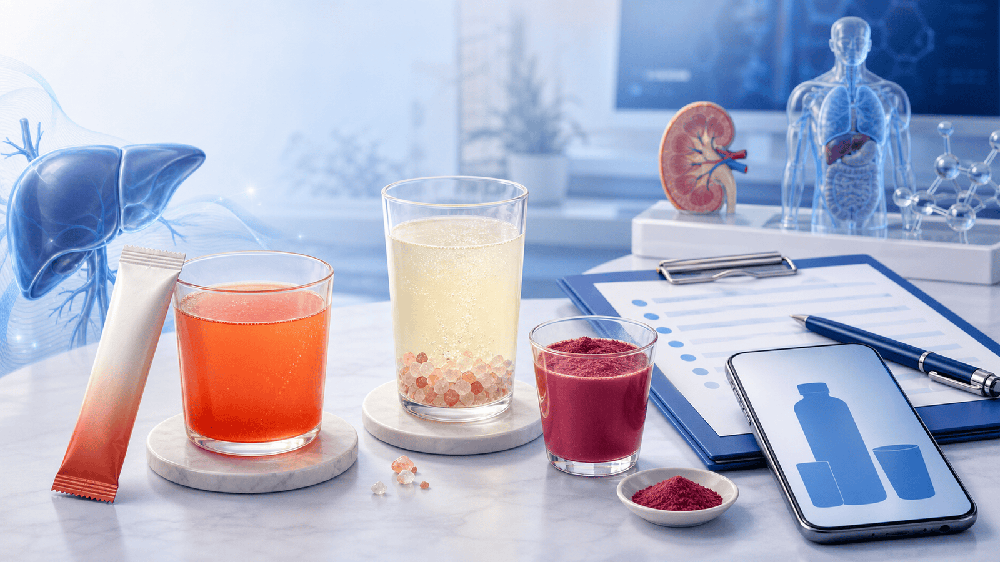
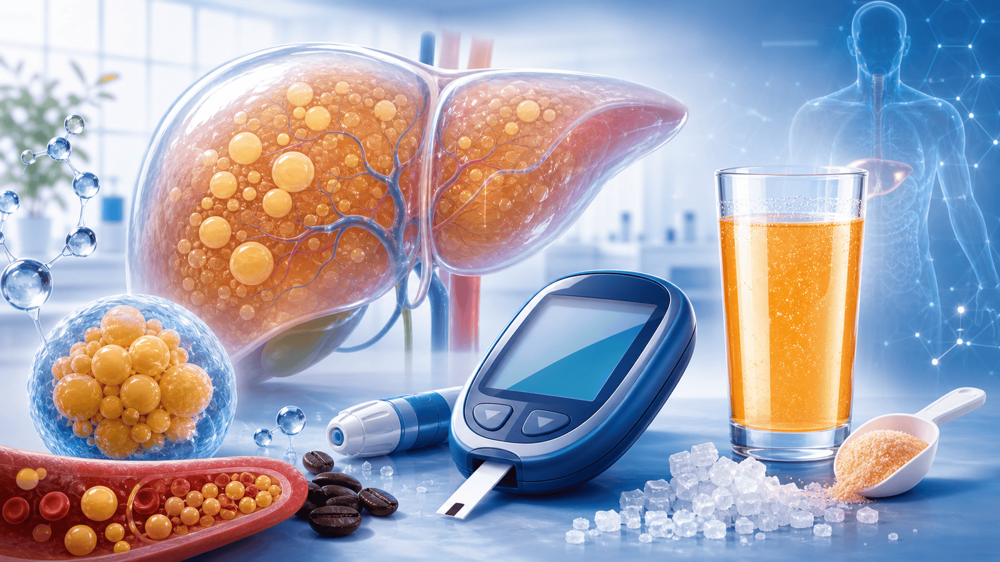
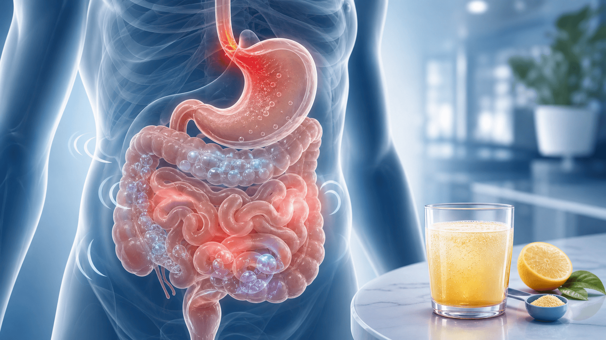
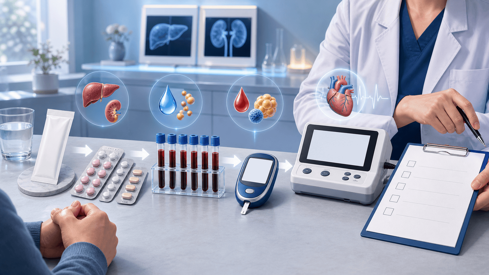

Common set
PowerCocktail · Restorate · Activize
외래에서 가장 자주 만나는 조합입니다. 아침 영양/섬유, 저녁 미네랄, 각성/활력 제품이 섞여 있습니다.
같은 “주스”라도 성분과 주의점이 다릅니다.
제품 사진과 라벨을 먼저 확인하고, 혈당·위장·카페인·상호작용 관점에서 환자에게 짧고 명확하게 안내합니다.
PM/FitLine 제품은 치료제가 아니라 건강기능식품입니다. 다만 당·카페인·나이아신·미네랄·섬유 성분 때문에 환자군별 주의가 달라집니다.
환자가 “PM 주스”라고 말해도 실제 제품은 여러 가지입니다. 사진·라벨·섭취 시간까지 확인해야 상담이 정확합니다.
외래에서 가장 자주 만나는 조합입니다. 아침 영양/섬유, 저녁 미네랄, 각성/활력 제품이 섞여 있습니다.
“당이 떨어진다”는 설명은 C-Balance 광고가 제품군 전체로 일반화된 경우가 많습니다.
과당 순서, 당류 표시, 미네랄 함량은 유통품 라벨에 따라 달라질 수 있습니다.
PM-International/FitLine 계열 제품을 뜻하는 경우가 많습니다. 동명이품도 있어 오인 가능성이 있습니다.

제품 사진 약봉투 확인“좋은 영양제인가?”보다 어느 제품에 당·카페인·미네랄·섬유가 들어 있는지 나누어 설명합니다.
과당, 아카시아검/식이섬유, 비타민 B/C/E, 셀레늄, 과라나 카페인, 유산균, 강황·생강·포도씨 성분이 섞인 아침용 분말입니다.
과당/구연산 기반에 칼슘, 마그네슘, 아연, 철, 구리, 망간, 크롬, 셀레늄, 비타민 D3가 들어간 미네랄 제품입니다.
B군 비타민, 나이아신, 카페인/과라나, 비트루트·강황·생강 계열 성분으로 각성감·활력감을 기대하는 제품입니다.
치료 효과가 아니라 “보조적으로 느낄 수 있는 변화”입니다. 시작한다면 목표와 중단 기준을 먼저 정합니다.
식사 질이 낮고 비타민·미네랄 보충 목적이 분명한 경우, 단기간 보조 선택지로 볼 수 있습니다.
섬유/프리바이오틱 성분이 배변 규칙성에 보조가 될 수 있으나, 복부팽만을 같이 봐야 합니다.
신장기능이 정상이고 약물 간격 문제가 없을 때, 미네랄 보충 목적을 분명히 하고 관찰합니다.
카페인 민감성이 없다면 오전 활동 전 각성감을 느낄 수 있습니다. 불면·심계항진이 생기면 중단합니다.
환자 설명은 판매 후기나 NTC 문구보다 실제 라벨과 임상적으로 확인 가능한 결과를 기준으로 정리합니다.
PM 주스 전체에 적용할 수 없습니다. 제품에는 과당/포도당, 카페인, 나이아신이 포함될 수 있어 당뇨약 대체는 금물입니다.
상부위장관 질환 치료 근거는 없습니다. 구연산, 생강/강황, 카페인은 속쓰림·역류를 악화시킬 수 있습니다.
홍조, 속쓰림, 두근거림, 설사는 호전 신호가 아니라 이상반응일 수 있습니다.
흡수율 주장은 임상적 치료 효과, 혈당 개선, 위장병 호전을 입증하는 자료와 다릅니다.
순도·도핑 안전성 참고자료일 수는 있지만, 당뇨·위장·피로 치료 효과 인증은 아닙니다.
“드셔도 되는지와 효과가 입증됐는지는 다른 문제입니다. 안전하게 보려면 라벨과 약을 같이 봐야 합니다.”
PM/FitLine 제품은 “무당 건강주스”로 설명하면 부정확합니다. 실제 유통품 라벨의 당·열량을 확인합니다.
PowerCocktail 라벨에는 과당과 “sugar and sweetener” 문구가 확인됩니다. Restorate·Activize도 당 성분 확인이 필요합니다.
과라나 유래 카페인은 각성감뿐 아니라 불면, 불안, 심계항진, 역류 악화를 유발할 수 있습니다.
고용량 나이아신 연구에서는 신규 당뇨 위험 증가가 보고되었습니다. 제품 용량에서 효과 크기는 불확실하지만 혈당 상담상 주의합니다.
혈당약을 줄이고 PM 주스로 대체하려는 경우는 명확히 만류하고 HbA1c·혈당일지를 확인합니다.

혈당 지방간 중성지방섬유·이눌린·아카시아검, 구연산, 생강/강황, 카페인이 들어가면 장에는 도움과 불편이 함께 나타날 수 있습니다.

복부팽만 속쓰림 설사/가스발효성 섬유와 이눌린은 변비에는 보조가 될 수 있지만, IBS 성향에서는 가스와 팽만을 악화시킬 수 있습니다.
섬유, 마그네슘, 산성 성분이 장운동과 수분을 바꾸며 설사나 경련성 통증을 만들 수 있습니다.
구연산, 카페인, 공복 복용은 위산 역류와 속쓰림을 악화시킬 수 있어 GERD 환자는 특히 조심합니다.
검은변, 혈변, 체중감소, 야간 설사, 빈혈, 지속 구토가 있으면 건강식품 문제가 아니라 검사 대상입니다.
Activize와 PowerCocktail의 각성감은 주로 카페인/과라나 맥락에서 설명하고, 홍조는 나이아신 반응으로 안내합니다.
오후 복용, 카페인 민감자, 공황/불안 성향에서는 수면과 심박 증상이 먼저 악화될 수 있습니다.
부정맥, 미조절 고혈압, 갑상선항진증, 흉통 병력이 있으면 시작 전부터 권하지 않는 편이 안전합니다.
나이아신의 혈관 확장 반응일 수 있습니다. 심하거나 반복되면 복용 지속 이유가 없습니다.
가려움, 입술/눈 주위 부종, 호흡곤란이 동반되면 즉시 중단하고 진료가 필요합니다.
환자가 원하면 “절대 금지”보다 위험 이유를 짚고, 필요한 경우 검사·복용 간격·중단 기준을 제시합니다.
당·과당, 카페인, 나이아신 방향성 때문에 “혈당에 좋은 주스”로 권하면 위험합니다.
카페인 민감성과 심계항진, 불안, 수면 악화를 먼저 확인합니다.
미네랄 제품은 신장기능 저하에서 축적·전해질 문제를 만들 수 있어 검사 확인이 우선입니다.
칼슘/철/마그네슘은 레보티록신, 퀴놀론·테트라사이클린, 비스포스포네이트 흡수를 방해할 수 있습니다.
강황/생강 성분, 다약제 병용, 내시경·수술 예정이면 담당의와 중단 여부를 조율합니다.
카페인, 고함량 비타민/미네랄, 유산균, 식물추출물 안전성을 쉽게 일반화하지 않습니다.
“먹고 불편했다”를 모두 제품 탓으로만 보지 않습니다. 위험 신호는 기저질환 평가로 연결합니다.

혈액검사 심전도 약물 확인복용을 무조건 막기보다, 환자별 위험을 빠르게 선별하고 기록 가능한 목표를 정합니다.
사진, 제품명, 1회량, 하루 섭취량, 복용 시간, C-Balance 여부를 확인합니다.
당뇨약, 항응고제, 갑상선약, 항생제, CKD, 부정맥, GERD, 임신/수유를 묻습니다.
CBC, 간/신장기능, 전해질, 공복혈당/HbA1c, 지질/TG를 기본으로 맞춥니다.
위장증상 지속, 혈당 악화, 두근거림, 홍조/발진, 황달, 흉통이면 중단 후 재평가합니다.
복용 여부는 환자가 결정하더라도, 치료 대체와 위험 신호 방치는 피해야 합니다.
모바일로 다시 보기